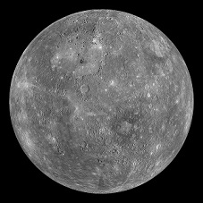
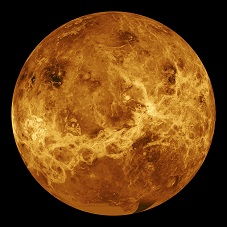
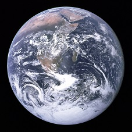
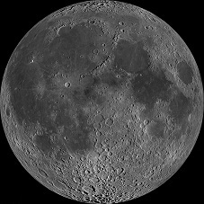
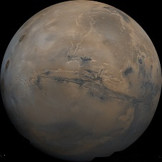

| Links to Planet Fact Sheets | Mercury | Venus | Earth | Moon | Mars |
|---|---|---|---|---|---|
| Images of Planets |  |  |  |  |  |
| Mass (1024kg) | 0.330 | 4.87 | 5.97 | 0.073 | 0.642 |
| Gravity (m/s2) | 3.7 | 8.9 | 9.8 | 1.6 | 3.7 |
| Rotation Period (hours) | 1407.6 | -5832.5 | 23.9 | 655.7 | 24.6 |
| Length of Day (hours) | 4222.6 | 2802.0 | 24.0 | 708.7 | 24.7 |
| Distance from Sun (106 km) | 57.9 | 108.2 | 149.6 | 0.384* | 228.0 |
| Mean Temperature (C) | 167 | 464 | 15 | -20 | -65 |
| Number of Moons | 0 | 0 | 1 | 0 | 2 |
* Planetary Fact Sheet Notes: For the Moon, the average distance from the Earth is given.